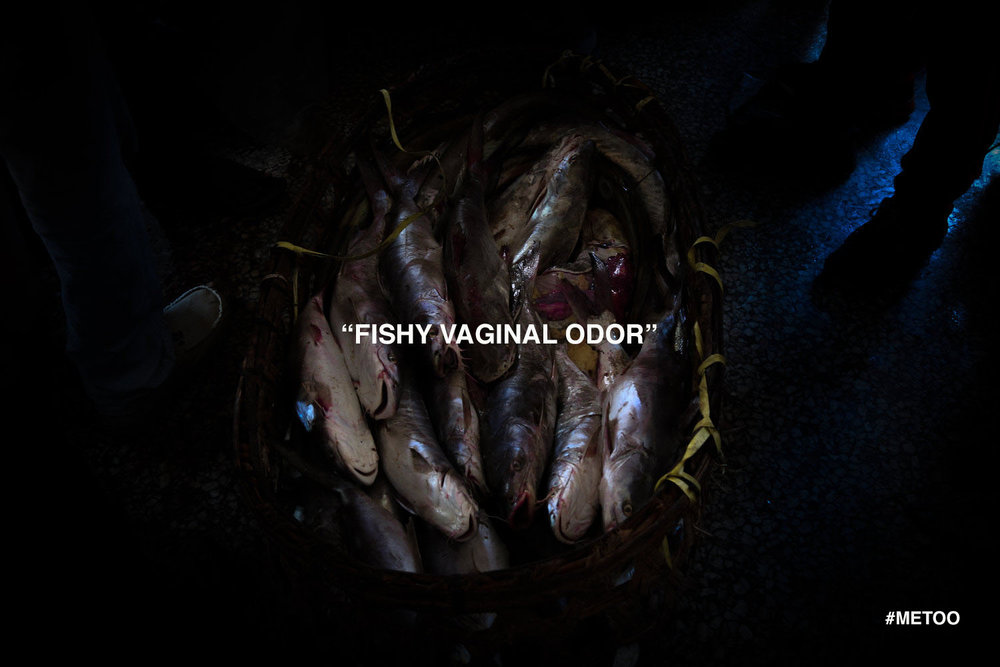
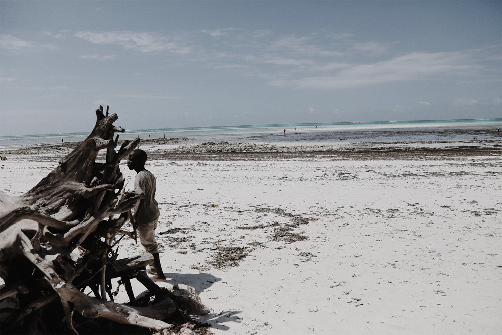
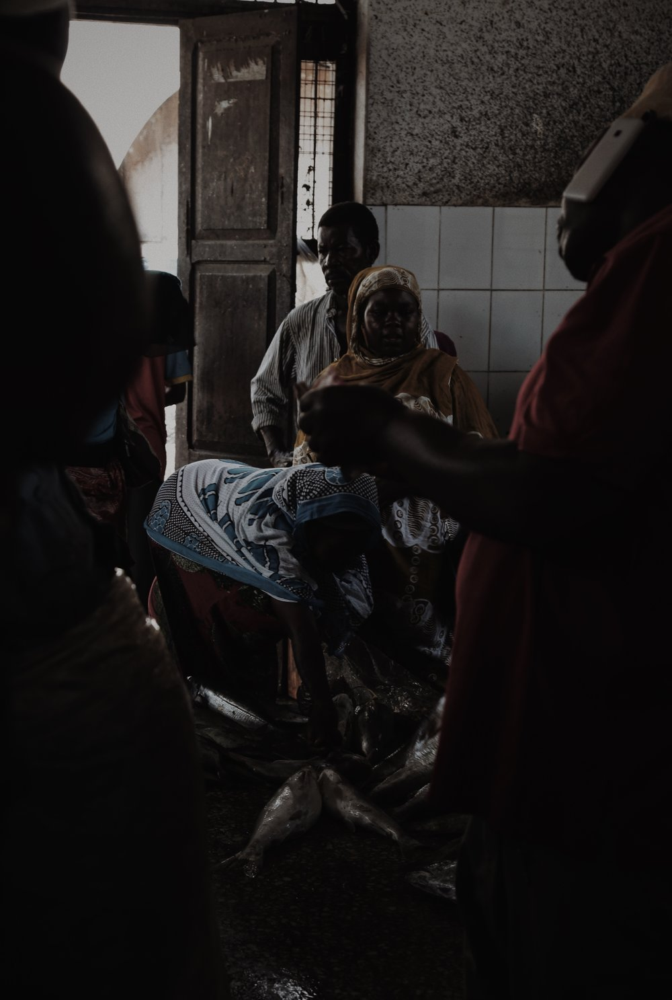
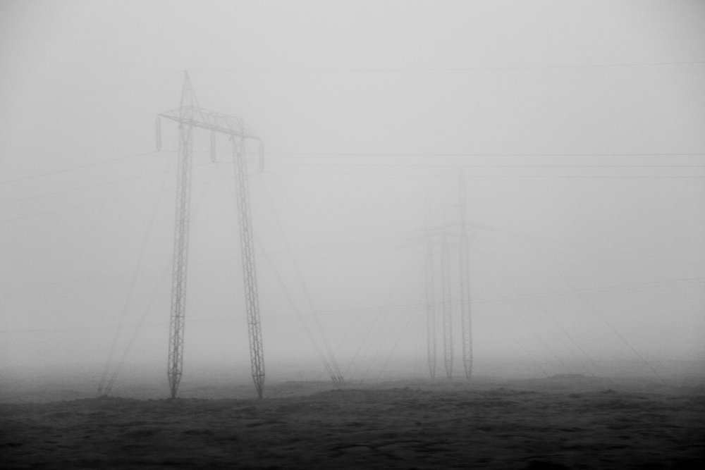
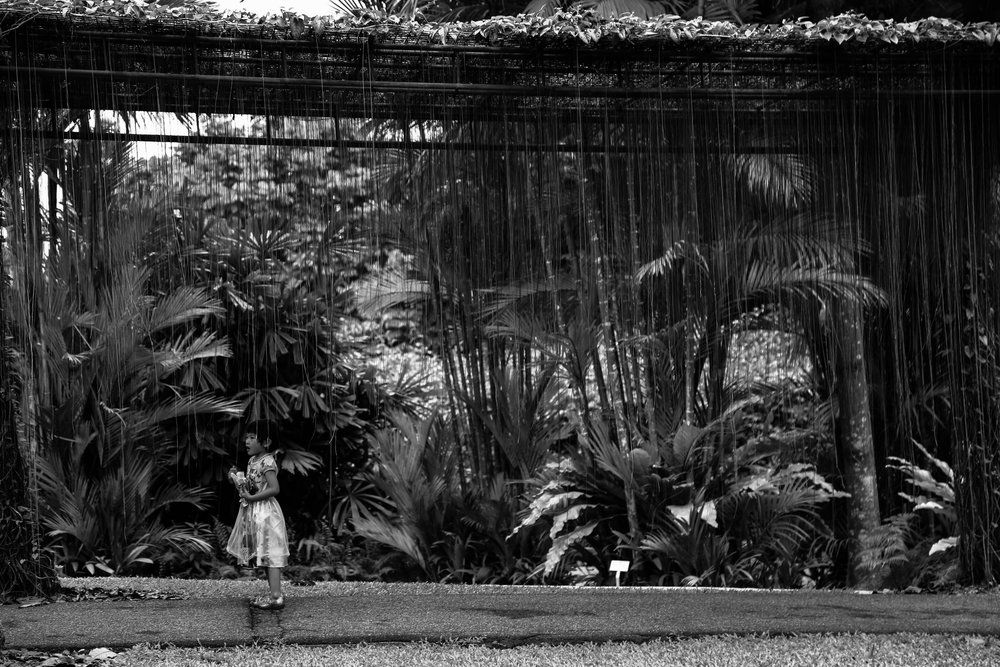
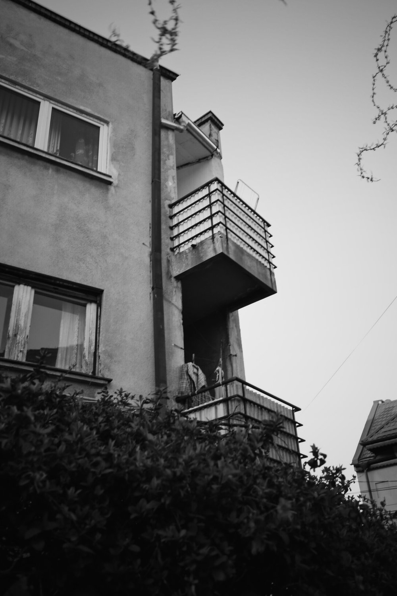

Alexandra Roman
12/21/2018
It is important to note that my work is not complete nor resolved. I started from online installation and digital media and today, I tried to bring that to life here by creating a chaotic salon style collage. My next step is film — experimental film where the characters I create can fully breathe. And music — I feel my poems will morph into lyrics as my next step. My work is a socio-psychological exploration on identity reconstruction from the perspective of a film director — when I created this, I had scenes, dialogue, thematic music, all running through my head. However, it is important to determine the parameters of said “identity” and said “reconstruction”. From Existentialist philosophers such as Sartre’s and Wittgenstein’s accounts on non-thetic consciousness, which refers to the type of self-consciousness that grounds the use of “I” as subject, my work looks at the need to hide behind false external self- representations and self-deceptive beliefs (perhaps as a self defense mechanism)— and in this case specifically, I do so through the dimensions of femininity — which includes beauty, sensuality, fashion and consequently vanity, look-a-like-s hence the element of duplicity, and culture, which includes art, high class, worldly or well travelled, valuable hence the bleeding gold, but also consequently arrogance and narcissism. In Romanian, there is a very popular saying “Dai pe afara cu valoare” — which translates to “you’re overflowing with value and gold” — a highly coveted social status within a highly traditional society. In my piece, I have an ode — from me to me, which talks about heartbreak and betrayal and the destruction of reality as you know it, but not in the traditional kind. It tackles heartbreak done by one’s own hand — it talks about the heartbreak that we inflict onto ourselves the moment we forget about our souls — so then I have a theory — and my theory is that a split happens — between your outside and your inside — between your body and your soul. And every time you betray who you are, the split tears deeper and deeper until you don’t know who you are any more, and you become the spitting image of everyone else caught up in the same universal cycle.      